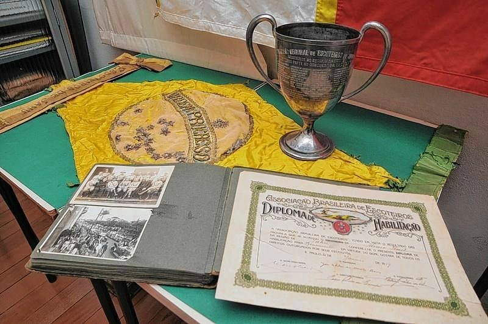
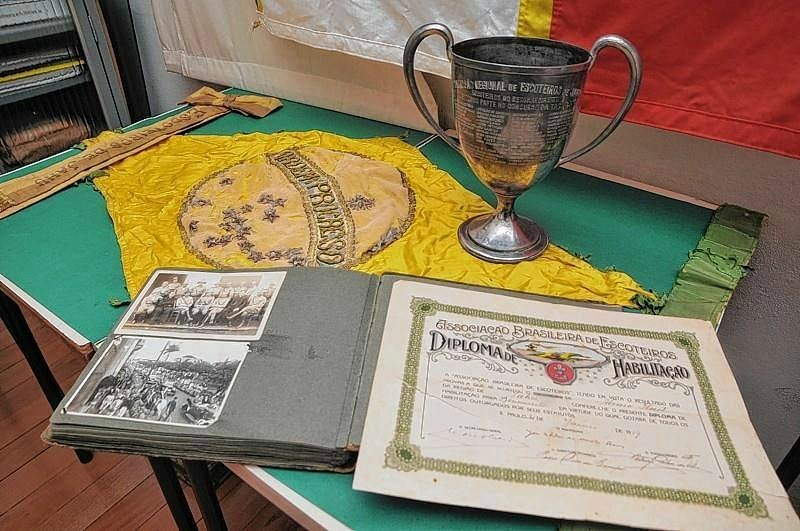

Igreja Matriz Nossa Sra. do Patrocínio

A Igreja Matriz de Jaú é um marco histórico e religioso da cidade, conhecida por sua bela arquitetura e vitrais coloridos.
Teatro Municipal Elza Muneratto
O Teatro Municipal Elza Muneratto é um dos principais espaços culturais da cidade, com uma arquitetura imponente e diversas apresentações ao longo do ano.
Parque Municipal do Rio Jaú
O Parque do Rio Jaú oferece uma bela área verde para caminhadas, piqueniques e atividades ao ar livre, sendo um ponto de encontro para famílias.
Museu Municipal de Jaú
 

O Museu Municipal preserva a história e a cultura da cidade, com exposições permanentes e temporárias sobre o passado de Jaú.
Lago do Silvério

O Lago do Silvério é um dos pontos turísticos mais bonitos de Jaú, proporcionando um ambiente relaxante para os visitantes.
Praça da República

A Praça da República é um local histórico e central em Jaú, ideal para passeios e eventos culturais.